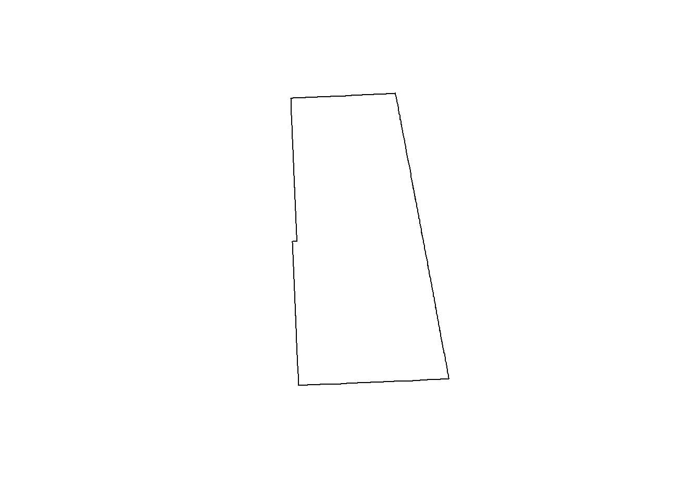
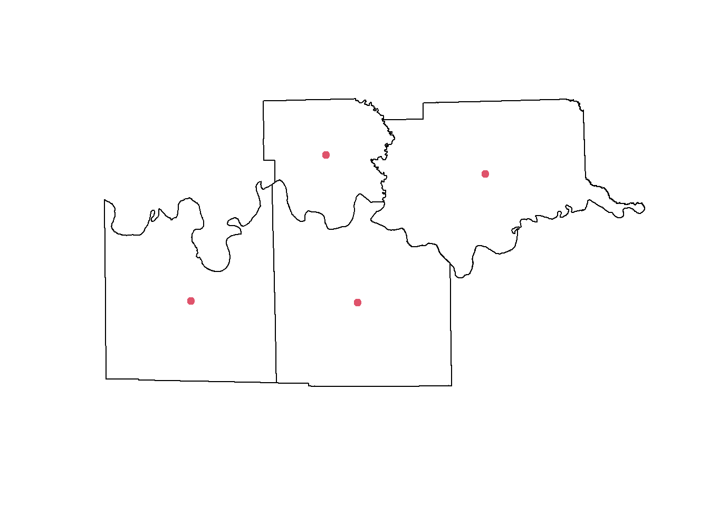
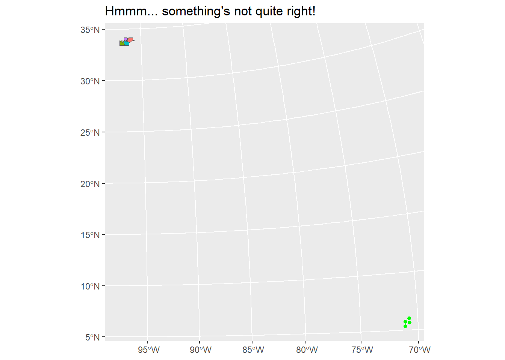
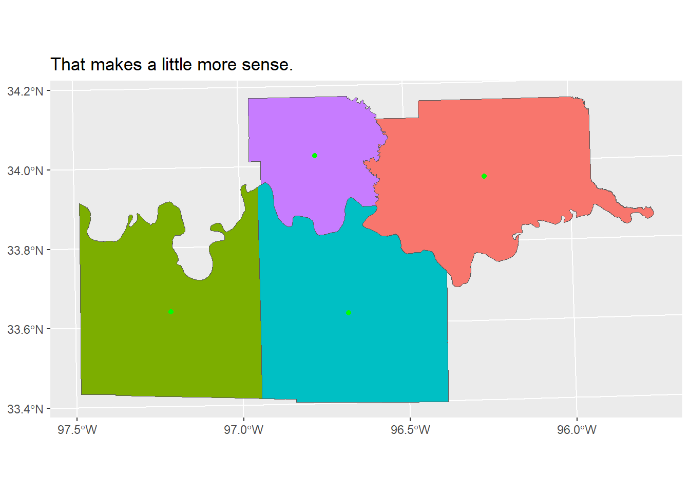

# Check if packages are installed
Package_list <- c( "tidyverse", "rprojroot", "tigris", "sf")
for (package in Package_list) {
if (!require(package, character.only = TRUE)) {
install.packages(package, dependencies = TRUE)
}
#library(package, character.only = TRUE)
}
rm(list = c("package", "Package_list"))
suppressPackageStartupMessages(library(tidyverse)) # Reload some libraries to cut down on verbosity
suppressMessages(library(rprojroot))
suppressMessages(library(tigris)) # Lots of layers available here
options(tigris_use_cache = TRUE)
## for rprojroot - pointers to folders in project
base_path <- find_rstudio_root_file()
source_path <- file.path(base_path, "source_data//")
csv_path <- file.path(base_path, "csv_output//")
dat_path <- file.path(base_path, "dat_output//")
#plot_path <- file.path(base_path, "plots//")
spatial_path <- file.path(base_path, "spatial_output//")Reading & Writing Spatial Files in R
Some setup first
I used the “sf::” prefix on all of the functions from the sf package just to make things a little clearer when I’m doing something “spatial”.
Load some TIGER Census data with the tigris package
https://www.rdocumentation.org/packages/tigris/versions/2.1
https://github.com/walkerke/tigris/tree/master
Explicitly setting the crs when you load the file will save you much frustration later on.
# Read the data in and explicitly set the crs ------
state <- tigris::states() |> filter(STUSPS == "OK" | STUSPS == "TX")
state <- sf::st_transform(state, crs = 32614)
marshall <- tigris::counties("OK") |> filter(NAME == "Marshall")
marshall <- sf::st_transform(marshall, crs = 32614)
OK_Counties <- tigris::counties() |> filter(STATEFP == "40")
OK_Counties <- sf::st_transform(OK_Counties, crs = 32614)
TX_OK_Counties <- tigris::counties() |> filter(STATEFP == "40" | STATEFP == "48")
TX_OK_Counties <- sf::st_transform(TX_OK_Counties, crs = 32614)- 1
- Explicitly setting the crs when loaded
Write a single layer to a geopackage
sf::write_sf(marshall, paste0(spatial_path, "one_layer.gpkg"), "Marshall")
sf::st_layers(paste0(spatial_path, "one_layer.gpkg"))- 1
- Write the layer to the file
- 2
- List the layers in the file
Driver: GPKG
Available layers:
layer_name geometry_type features fields crs_name
1 Marshall Multi Polygon 1 17 WGS 84 / UTM zone 14NWriting multiple layers to a geopackage
First off we need a bunch of layers to write
Extract a list of the counties in the data frame
rm(list = c("marshall", "state", "TX_OK_Counties"))# These are in the way at the moment so lets get rid of them.
CountyList <- unique(OK_Counties$NAME)
CountyList [1] "Adair" "Sequoyah" "Canadian" "Marshall" "Harper"
[6] "Alfalfa" "Lincoln" "Hughes" "Muskogee" "Ottawa"
[11] "Rogers" "Caddo" "Mayes" "Coal" "Carter"
[16] "Greer" "Cotton" "McCurtain" "Atoka" "Okmulgee"
[21] "Washington" "Seminole" "Woods" "Harmon" "Kay"
[26] "Blaine" "Pontotoc" "Creek" "Pottawatomie" "Kiowa"
[31] "Love" "Noble" "Washita" "Jackson" "Major"
[36] "Delaware" "Custer" "Ellis" "Oklahoma" "Johnston"
[41] "Comanche" "Pushmataha" "Cleveland" "Wagoner" "Beckham"
[46] "Garvin" "Craig" "Cherokee" "Osage" "Tillman"
[51] "Logan" "Pittsburg" "Jefferson" "Pawnee" "Okfuskee"
[56] "McClain" "Le Flore" "Beaver" "Dewey" "Choctaw"
[61] "Roger Mills" "Bryan" "Latimer" "Texas" "Woodward"
[66] "Stephens" "Tulsa" "McIntosh" "Kingfisher" "Grant"
[71] "Murray" "Nowata" "Haskell" "Grady" "Payne"
[76] "Cimarron" "Garfield" Write a function to pull each row out as a layer into the environment and name it according to the value in the NAME column
Create_County_df <- function(x) {
df <- OK_Counties |> filter(NAME == x) |> distinct(NAME, .keep_all = TRUE)
df_name <- paste0(x)
assign(df_name, df, envir = .GlobalEnv)
}Apply the function to the list of county names
We only need a few data frames to demonstrate so lets filter the list down a bit first.
ShortList <- head(CountyList, 5)
ShortList
lapply(ShortList, Create_County_df)- 1
- Take the first 5 rows
- 2
- We could have done this with a loop but not in only one line.
[1] "Adair" "Sequoyah" "Canadian" "Marshall" "Harper"
[[1]]
Simple feature collection with 1 feature and 17 fields
Geometry type: MULTIPOLYGON
Dimension: XY
Bounding box: xmin: 878098.7 ymin: 3951961 xmax: 910033.5 ymax: 4011037
Projected CRS: WGS 84 / UTM zone 14N
STATEFP COUNTYFP COUNTYNS GEOID NAME NAMELSAD LSAD CLASSFP MTFCC CSAFP
1 40 001 01101788 40001 Adair Adair County 06 H1 G4020 <NA>
CBSAFP METDIVFP FUNCSTAT ALAND AWATER INTPTLAT INTPTLON
1 <NA> <NA> A 1486345553 8864932 +35.8980428 -094.6510258
geometry
1 MULTIPOLYGON (((879562.1 39...
[[2]]
Simple feature collection with 1 feature and 17 fields
Geometry type: MULTIPOLYGON
Dimension: XY
Bounding box: xmin: 850636 ymin: 3914018 xmax: 915069.2 ymax: 3953311
Projected CRS: WGS 84 / UTM zone 14N
STATEFP COUNTYFP COUNTYNS GEOID NAME NAMELSAD LSAD CLASSFP MTFCC
1 40 135 01101855 40135 Sequoyah Sequoyah County 06 H1 G4020
CSAFP CBSAFP METDIVFP FUNCSTAT ALAND AWATER INTPTLAT INTPTLON
1 <NA> <NA> <NA> A 1744553528 105073391 +35.5024345 -094.7507569
geometry
1 MULTIPOLYGON (((910187.8 39...
[[3]]
Simple feature collection with 1 feature and 17 fields
Geometry type: MULTIPOLYGON
Dimension: XY
Bounding box: xmin: 562118.4 ymin: 3909679 xmax: 620741.7 ymax: 3954366
Projected CRS: WGS 84 / UTM zone 14N
STATEFP COUNTYFP COUNTYNS GEOID NAME NAMELSAD LSAD CLASSFP MTFCC
1 40 017 01101796 40017 Canadian Canadian County 06 H1 G4020
CSAFP CBSAFP METDIVFP FUNCSTAT ALAND AWATER INTPTLAT INTPTLON
1 <NA> <NA> <NA> A 2322112748 23146754 +35.5433544 -097.9798891
geometry
1 MULTIPOLYGON (((562193 3938...
[[4]]
Simple feature collection with 1 feature and 17 fields
Geometry type: MULTIPOLYGON
Dimension: XY
Bounding box: xmin: 687240.8 ymin: 3744940 xmax: 726341.4 ymax: 3783739
Projected CRS: WGS 84 / UTM zone 14N
STATEFP COUNTYFP COUNTYNS GEOID NAME NAMELSAD LSAD CLASSFP MTFCC
1 40 095 01101832 40095 Marshall Marshall County 06 H1 G4020
CSAFP CBSAFP METDIVFP FUNCSTAT ALAND AWATER INTPTLAT INTPTLON
1 <NA> <NA> <NA> A 962153980 143719930 +34.0270069 -096.7705327
geometry
1 MULTIPOLYGON (((687379.8 37...
[[5]]
Simple feature collection with 1 feature and 17 fields
Geometry type: MULTIPOLYGON
Dimension: XY
Bounding box: xmin: 410268.2 ymin: 4049867 xmax: 473687.1 ymax: 4095531
Projected CRS: WGS 84 / UTM zone 14N
STATEFP COUNTYFP COUNTYNS GEOID NAME NAMELSAD LSAD CLASSFP MTFCC CSAFP
1 40 059 01101817 40059 Harper Harper County 06 H1 G4020 <NA>
CBSAFP METDIVFP FUNCSTAT ALAND AWATER INTPTLAT INTPTLON
1 <NA> <NA> A 2689919591 5259447 +36.8003504 -099.6628052
geometry
1 MULTIPOLYGON (((446982 4049...Now we have a bunch of layers to write
Write multiple data frames to a geopackage
There’s two approaches here.
Loop over a list of sf data frames
for (i in ShortList) {
# get() gets the object not the name
# i is an object in first instance but character string in second(layer name)
sf::write_sf(get(i), paste0(spatial_path, "OK_Counties.gpkg"), i)
}Use lapply over a vector of names
Applies a function (in this case an anonymous function) to each object within a vector( a list - ShortList).
lapply(ShortList,function(z) sf::write_sf(get(z), paste0(spatial_path, "OK_Counties2.gpkg"), z)) [[1]]
Simple feature collection with 1 feature and 17 fields
Geometry type: MULTIPOLYGON
Dimension: XY
Bounding box: xmin: 878098.7 ymin: 3951961 xmax: 910033.5 ymax: 4011037
Projected CRS: WGS 84 / UTM zone 14N
STATEFP COUNTYFP COUNTYNS GEOID NAME NAMELSAD LSAD CLASSFP MTFCC CSAFP
1 40 001 01101788 40001 Adair Adair County 06 H1 G4020 <NA>
CBSAFP METDIVFP FUNCSTAT ALAND AWATER INTPTLAT INTPTLON
1 <NA> <NA> A 1486345553 8864932 +35.8980428 -094.6510258
geometry
1 MULTIPOLYGON (((879562.1 39...
[[2]]
Simple feature collection with 1 feature and 17 fields
Geometry type: MULTIPOLYGON
Dimension: XY
Bounding box: xmin: 850636 ymin: 3914018 xmax: 915069.2 ymax: 3953311
Projected CRS: WGS 84 / UTM zone 14N
STATEFP COUNTYFP COUNTYNS GEOID NAME NAMELSAD LSAD CLASSFP MTFCC
1 40 135 01101855 40135 Sequoyah Sequoyah County 06 H1 G4020
CSAFP CBSAFP METDIVFP FUNCSTAT ALAND AWATER INTPTLAT INTPTLON
1 <NA> <NA> <NA> A 1744553528 105073391 +35.5024345 -094.7507569
geometry
1 MULTIPOLYGON (((910187.8 39...
[[3]]
Simple feature collection with 1 feature and 17 fields
Geometry type: MULTIPOLYGON
Dimension: XY
Bounding box: xmin: 562118.4 ymin: 3909679 xmax: 620741.7 ymax: 3954366
Projected CRS: WGS 84 / UTM zone 14N
STATEFP COUNTYFP COUNTYNS GEOID NAME NAMELSAD LSAD CLASSFP MTFCC
1 40 017 01101796 40017 Canadian Canadian County 06 H1 G4020
CSAFP CBSAFP METDIVFP FUNCSTAT ALAND AWATER INTPTLAT INTPTLON
1 <NA> <NA> <NA> A 2322112748 23146754 +35.5433544 -097.9798891
geometry
1 MULTIPOLYGON (((562193 3938...
[[4]]
Simple feature collection with 1 feature and 17 fields
Geometry type: MULTIPOLYGON
Dimension: XY
Bounding box: xmin: 687240.8 ymin: 3744940 xmax: 726341.4 ymax: 3783739
Projected CRS: WGS 84 / UTM zone 14N
STATEFP COUNTYFP COUNTYNS GEOID NAME NAMELSAD LSAD CLASSFP MTFCC
1 40 095 01101832 40095 Marshall Marshall County 06 H1 G4020
CSAFP CBSAFP METDIVFP FUNCSTAT ALAND AWATER INTPTLAT INTPTLON
1 <NA> <NA> <NA> A 962153980 143719930 +34.0270069 -096.7705327
geometry
1 MULTIPOLYGON (((687379.8 37...
[[5]]
Simple feature collection with 1 feature and 17 fields
Geometry type: MULTIPOLYGON
Dimension: XY
Bounding box: xmin: 410268.2 ymin: 4049867 xmax: 473687.1 ymax: 4095531
Projected CRS: WGS 84 / UTM zone 14N
STATEFP COUNTYFP COUNTYNS GEOID NAME NAMELSAD LSAD CLASSFP MTFCC CSAFP
1 40 059 01101817 40059 Harper Harper County 06 H1 G4020 <NA>
CBSAFP METDIVFP FUNCSTAT ALAND AWATER INTPTLAT INTPTLON
1 <NA> <NA> A 2689919591 5259447 +36.8003504 -099.6628052
geometry
1 MULTIPOLYGON (((446982 4049...Remove layers from geopackage
List the layers in the geopackages we just wrote
There should be 5 layers in each file
sf::st_layers(paste0(spatial_path, "OK_Counties.gpkg"))Driver: GPKG
Available layers:
layer_name geometry_type features fields crs_name
1 Adair Multi Polygon 1 17 WGS 84 / UTM zone 14N
2 Sequoyah Multi Polygon 1 17 WGS 84 / UTM zone 14N
3 Canadian Multi Polygon 1 17 WGS 84 / UTM zone 14N
4 Marshall Multi Polygon 1 17 WGS 84 / UTM zone 14N
5 Harper Multi Polygon 1 17 WGS 84 / UTM zone 14Nsf::st_layers(paste0(spatial_path, "OK_Counties2.gpkg"))Driver: GPKG
Available layers:
layer_name geometry_type features fields crs_name
1 Adair Multi Polygon 1 17 WGS 84 / UTM zone 14N
2 Sequoyah Multi Polygon 1 17 WGS 84 / UTM zone 14N
3 Canadian Multi Polygon 1 17 WGS 84 / UTM zone 14N
4 Marshall Multi Polygon 1 17 WGS 84 / UTM zone 14N
5 Harper Multi Polygon 1 17 WGS 84 / UTM zone 14NDelete one layer - should get 4 rows
sf::st_delete(paste0(spatial_path, "OK_Counties.gpkg"), "Marshall")Deleting layer `Marshall' using driver `GPKG'sf::st_layers(paste0(spatial_path, "OK_Counties.gpkg")) # Check to see if it workedDriver: GPKG
Available layers:
layer_name geometry_type features fields crs_name
1 Adair Multi Polygon 1 17 WGS 84 / UTM zone 14N
2 Sequoyah Multi Polygon 1 17 WGS 84 / UTM zone 14N
3 Canadian Multi Polygon 1 17 WGS 84 / UTM zone 14N
4 Harper Multi Polygon 1 17 WGS 84 / UTM zone 14NDelete a list of layers - deleting 2 layers
delList <- head(ShortList,2) # take the first 2 rows
lapply(delList, function(y)sf::st_delete(paste0(spatial_path, "OK_Counties2.gpkg"), y))Deleting layer `Adair' using driver `GPKG'
Deleting layer `Sequoyah' using driver `GPKG'[[1]]
[1] TRUE
[[2]]
[1] TRUEsf::st_layers(paste0(spatial_path, "OK_Counties2.gpkg")) # Check to see if it workedDriver: GPKG
Available layers:
layer_name geometry_type features fields crs_name
1 Canadian Multi Polygon 1 17 WGS 84 / UTM zone 14N
2 Marshall Multi Polygon 1 17 WGS 84 / UTM zone 14N
3 Harper Multi Polygon 1 17 WGS 84 / UTM zone 14NShapefiles
Shapefiles are the most common format for spatial data but they have some limitations. The format requires 4 separate files and column names and data are limited in length. When writing to a shapefile, column names may get truncated - this could be a problem if mulitple columns have similar names. Each layer requires a separate set of files. Writing the 77 layers in CountyList from above would require 4x77 files.
Write out a shape file
Write a file with a time stamp in filename - This works with any filename - csv, xlsx etc
GDAL complains here because there are too many digits in the ALAND and AWATER fields - the answer is to not use a shape file.
timestamp <- format(Sys.time(), "%Y%m%d_%H%M")
sf::st_write(Adair, paste0(spatial_path, "Adair_County_", timestamp,".shp")) #Adair_County_20250305_1126.shpWriting layer `Adair_County_20250306_1527' to data source
`G:/___R___/Spatial/spatial_output/Adair_County_20250306_1527.shp' using driver `ESRI Shapefile'
Writing 1 features with 17 fields and geometry type Multi Polygon.Warning in CPL_write_ogr(obj, dsn, layer, driver,
as.character(dataset_options), : GDAL Message 1: Value 1486345553 of field
ALAND of feature 0 not successfully written. Possibly due to too larger number
with respect to field widthRead a shape file - the one we just wrote out
Adair_Shape <- sf::st_read(paste0(spatial_path, "Adair_County_", timestamp,".shp")) # I cheated here - how?Reading layer `Adair_County_20250306_1527' from data source
`G:\___R___\Spatial\spatial_output\Adair_County_20250306_1527.shp'
using driver `ESRI Shapefile'
Simple feature collection with 1 feature and 17 fields
Geometry type: POLYGON
Dimension: XY
Bounding box: xmin: 878098.7 ymin: 3951961 xmax: 910033.5 ymax: 4011037
Projected CRS: WGS 84 / UTM zone 14Nplot(Adair_Shape$geometry)
Clean out environment and reset
We’re done with all those objects in the environment pane so let’s do some house cleaning.
The following code will remove the objects and reload everything that we’ll need.
rm(list=ls())
base_path <- find_rstudio_root_file()
source_path <- file.path(base_path, "source_data//")
csv_path <- file.path(base_path, "csv_output//")
dat_path <- file.path(base_path, "dat_output//")
TX_OK_Counties <- tigris::counties() |> filter(STATEFP == "40" | STATEFP == "48")
TX_OK_Counties <- sf::st_transform(TX_OK_Counties, crs = 32614)Comma Separated Values - CSV
Write to csv
We don’t need all the rows so let’s filter some out
TexomaList <- c("Marshall", "Bryan", "Cooke", "Grayson")
TexomaCounties <- TX_OK_Counties |> filter(NAME %in% TexomaList)- 1
- %in% is called an “infix” symbol
Find the centroid for each county and plot it
This will give us a set of points. Saving polygons to a csv isn’t going to be all that useful - it would be really difficult to parse that out and get it back into a GIS system. If you aren’t going to use the polygon data it won’t matter.
TexomaCentroids <- sf::st_centroid(TexomaCounties)
s <-
plot(TexomaCounties$geometry) +
plot(TexomaCentroids$geometry, add = TRUE, pch = 19, col = 2)
Create columns for coordinates from geometry column
Already having columns for x and y will make it much easier to import this back into a GIS system.
Write out the file
I use a “.dat” extension so that I know that the date columns haven’t been modified accidentally by nosy people using excel(including myself). Otherwise they are just a csv.
There’s too many columns - let’s get rid of some
I use the names of characters from the Dilbert comic strip when I can’t come up with a meaningful data frame name.
Select by column name
# Include by column name
dilbert <- Centroids |> select(STATEFP, COUNTYFP, NAME, ALAND, AWATER, northing, easting )
# Exclude by column name
wally <- Centroids |> select(-CBSAFP, -CLASSFP, -COUNTYNS, -CSAFP, -FUNCSTAT, -GEOID, -INTPTLAT,
-INTPTLON,-METDIVFP,-MTFCC,-NAMELSAD, -LSAD )Select by a list of column names
In this case I’m deleting everything in the list - if I remove the “-” in front of “all_of” I’d keep everything in the list.
delList <- c("CBSAFP", "CLASSFP", "COUNTYNS", "CSAFP", "FUNCSTAT", "GEOID", "INTPTLAT",
"INTPTLON","METDIVFP","MTFCC","NAMELSAD", "LSAD" )
alice <- Centroids |> select(-all_of(delList))Select by index (location)
Be careful with indexing columns. If for some reason the number of columns, or order of columns changes upstream, it will wreak havoc on your data frame.
I use indexing when I first load a data frame - sometimes its easier to index a column than to type some bizarre column name.
If the data frame is already in some type of workflow where the columns could change, I avoid indexing. But by then I’ve changed the column name to something reasonable anyway.
# Include by index
dogbert <- Centroids |> dplyr::select(1,5,14:19)
# Exclude by index
ratbert <- Centroids |> dplyr::select(-2:-4, -6:-13)The dogbert data frame has the most useful data so lets write it to a csv.
I’m using the same name with a time stamp so it won’t overwrite what we did previously. It might be worthwhile to compare the files. Time stamps in file names are sometimes useful and other times not so much. Early in a project when I’m making lots of changes to the data I use them. Once I get downstream projects going that use the data, I take the time stamp off, so I don’t have to change the file name every time I reload it in downstream scripts.
timestamp <- format(Sys.time(), "%Y%m%d_%H%M")
write_csv(dogbert, paste0(csv_path, "TexomaCountyCentroids", "_", timestamp, ".csv"))
write_csv(dogbert, paste0(dat_path, "TexomaCountyCentroids", "_", timestamp, ".dat")) Read from a csv and convert to an sf object
I used “Import Dataset” here because the file name was so long and my typing is so bad.
CountyCentroids <- read_csv(paste0(csv_path, "TexomaCountyCentroids_20250303_1434.csv"),
col_types = cols(INTPTLAT = col_number(),
INTPTLON = col_number(),
northing = col_number(), # these cols need to be numeric
easting = col_number()))Convert data frame with coordinate columns to sf object
fred <- CountyCentroids |> sf::st_as_sf(coords=c("northing","easting"), crs=32614)
plot_name<-
ggplot() +
geom_sf(data = TexomaCounties, aes(fill = NAME)) +
geom_sf(data = fred, color = "green") +
theme(legend.position = "none") +
ggtitle(paste0("Hmmm... something's not quite right!"))
print(plot_name)
That’s not what we were after!
Make sure you get x and y coords in right order
fred <- CountyCentroids |>
sf::st_as_sf(coords=c("easting","northing"), crs=32614)
plot_name<-
ggplot() +
geom_sf(data = TexomaCounties, aes(fill = NAME)) +
geom_sf(data = fred, color = "green") +
theme(legend.position = "none") +
ggtitle(paste0("That makes a little more sense."))
print(plot_name)- 1
- Switched position of “easting” and “northing”

Additional challenges:
These counties were intended to be those that surround Lake Texoma. One could argue that since I included Cooke county in the southwest I should probably include the county to the north of it as well (Love). How would you go about fixing that?
There are a couple of columns in dogbert that look like lat/long coordinates - I wonder if they are centroids that were already in the TIGER data? How would you go about sorting that out?
There’s two more columns that look like they contain area values for land and water. I don’t know what the units are but I suspect they might be square meters. How would you go about creating columns that converted those values to acres and square miles?